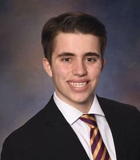

Vicenzo Infusino or Vinny for short is a 21 year old graduate student at Marquette University. He is originally from Kenosha, Wisconsin and back home he has a 12 year old brother as well as a mini golden-doodle puppy named Stella. Outside of school and work, Vinny can be found hanging out with his family and friends, working out, or traveling across the country. His favorite place he's traveled to is Lake Tahoe, California, and he is always down to eat good Italian cooking.
 Vinny is a 2023 college graduate from Marquette University in Milwaukee, Wisconsin. There he majored in both Computer Science and Computational Mathematics and
received a Bachelors of Science. Vinny had a cumulative GPA of 3.86 throughout his undergraduate career and graduated with Magna Cum Laude Honors. He was part
of Midnight Run, Upsilon Pi Epsilon Honors Society, Delta Tau Delta Fraternity, Mock Trial, and ACM at Marquette as well.
In addition, Vinny is also in the process of obtaining his Masters of Science degree in Computing with a Specialization in Information Assurance
and Cyber Defense at Marquette as well. If all goes according to plan, he is set to graduate in Spring 2024 with his Masters.
Outside of working for a local accounting firm and restaurant in his hometown of Kenosha, Vinny's current role is a Software Engineering Intern for Astronautics Corporation of America in Oak Creek, Wisconsin. There, he is part of a team that works on Test Automation Framework for Air Ground Communication Servers as well as developing unit tests in the C programming language.